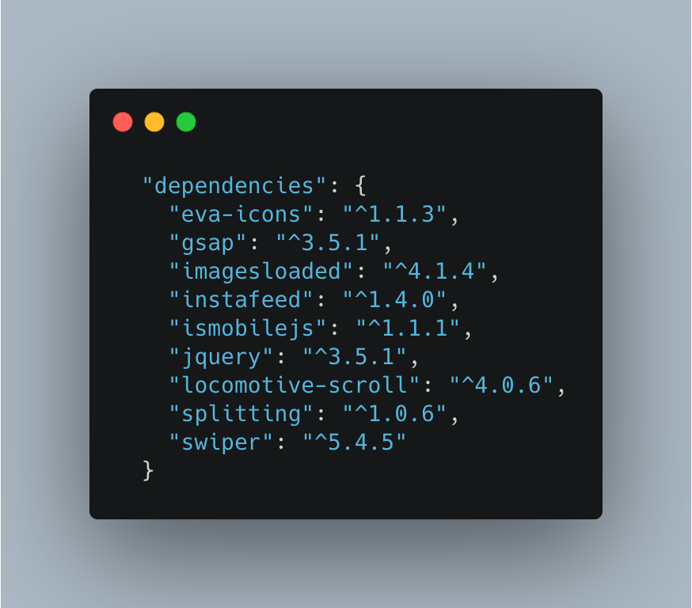
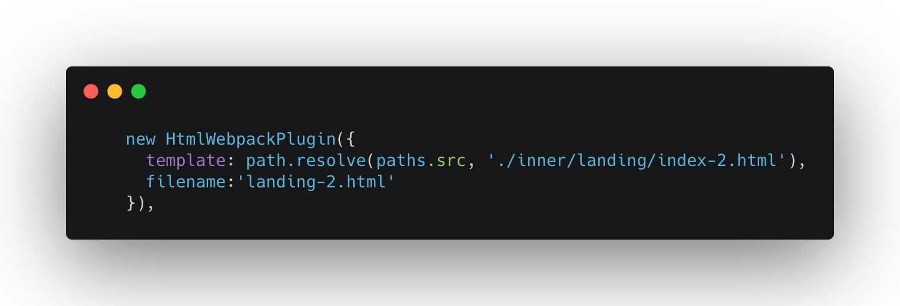
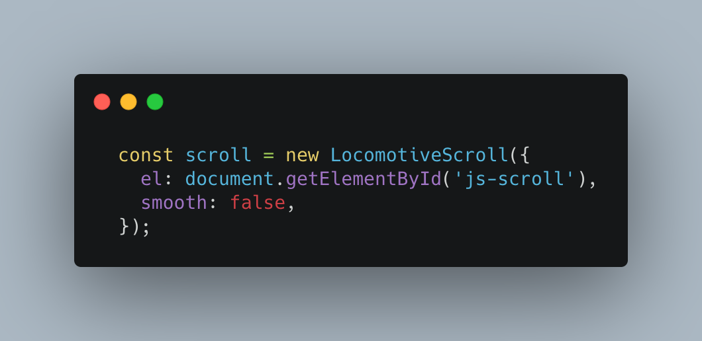

“Rebalance - Architecture portfolio” Documentation by “Sarvar Murad” v1.0
“Rebalance - Architecture portfolio HTML5 template”
Created: 05/03/2021
By: Sarvar Murad
Email: support@nicesquadthemes.com
Thank you for purchasing my theme. If you have any questions that are beyond the scope of this help file, please feel free to email via my work email here. Thanks so much!
Table of Contents
- File Structure
- Webpack Structure
- HTML Structure
- SCSS Files and Structure
- JavaScript
- Sources and Credits
- API Usage
- Any additional unique features that need an overview
A) File Structure - top
Theme mainly comes with 3 main folders
-
"Build" folder is production folder, generated using webpack. All css and js codes are minified and optimized for the web
-
"Src" folder is development folder, where you can do all the development stuff
-
"Webpack" folder consist of all configurations for the development and production
-
Babel configurations
-
ESlint configurations
-
JS-hint configurations
-
Prettier configurations
-
StyleLint configurations
-
package.json configurations
-
generated stat.json
B) Webpack Structure - top
What's included
- Webpack 4 JavaScript module bundler
- Babel 7 compiler ES6+ code into a backwards compatible version of JavaScript
- SASS preprocessor for CSS
- Autoprefixer for vendor prefixes (browser compability)
- Eslint JavaScript linter
- Stylelint CSS/SASS linter
- Prettier an opinionated code formatter
- lint-staged run linting and formatting your files that are marked as "staged" via git add before you commit.
Getting started
- run npm install to fetch all the dependencies
- run npm run start to start the webpack-dev-server (localhost:8080 will be opened automatically)
- start developing
- when you are done, run npm run build to get the production version of your app
Commands
Find all the commands list in package.json folder

These are the included libraries in the project
C) HTML Structure - top
HTML files are configured using webpack, if you planning to create new HTML please refer to this source code, you can find it in webpack.development.js. Keep in mind that newly created HTML files has to be registered to the webpack.production.js too
All the inner pages are structured and located inside "inner" folder
Because theme uses virtual scroll it calculated the height of the elements, it is recommended to give proper height to components
D) SCSS Files and Structure - top
SCSS file structure is similar to initcss library
Please have a look at the library documentation
https://github.com/inuitcss/inuitcss/
Note: Please pay detailed information to ['stylesheet/settings', 'stylesheet/utilities', 'stylesheet/tools'] folders, all stylesheet logic is implemented within these folders
E) JavaScript - top
All JS files are located in src/scripts folder.
Theme heavily relies on the Locomotive Scroll. Please have a look to the documentation of the library, in src/scripts/controllers/locomotive-config.js it is initialized
Most js files are class based, and divided into components, you can have a look its structure
In order to enable smooth scrolling, you can do it by changing 'smooth:true' in src/scripts/controllers/locomotive-config.js
F) Credits - top
Most of the images which were used in the theme was copyrighted by Mohamed Abd Elnaby
Before using his portfolios in the theme, permission was asked. Please note that these images are not for commercial use
Images in Testimonial component [landing 2] were licensed by envato market and watermarked image will be provided, as i don't have privilige to use commercially
All human portaits are taken by Unsplash and Pexels
G) API Usage - top
Theme uses two types of API: Instagram and Google maps
- In order to generate Instagram token please follow this manual: https://elfsight.com/blog/2016/05/how-to-get-instagram-access-token/
source code to add Instagram token
- In order to generate Google API key please follow this manual: https://developers.google.com/maps/documentation/javascript/get-api-key
source code to add Google API key
- Style your map here https://mapstyle.withgoogle.com/
Once again, thank you so much for purchasing this theme. As I said at the beginning, I'd be glad to help you if you have any questions relating to this theme. No guarantees, but I'll do my best to assist. If you have a more general question relating to the themes on ThemeForest, you might consider visiting the forums and asking your question in the "Item Discussion" section.
Sarvar Murad